#39 Der Große Gatsby
Auszeichnungen: 2 Oscars gewonnen 2 BAFTA-Awards gewonnen
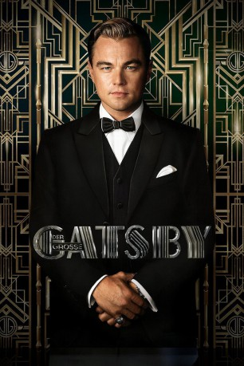 
 IMDB-Wertung: 7.3 / 10
IMDB-Wertung: 7.3 / 10  Metascore: 55
Metascore: 55 
Nicholas Carraway kommt aus der Provinz nach New York, wo er gerne in der Liga der Schönen und Reichen mitspielen würde. Eines Tages schafft er es, zu einer Party bei Jay Gatsby eingeladen zu werden, einem mysteriösen Mann, über den kaum jemand etwas weiß. Dieser tritt an ihn heran, und bittet ihn, ein Treffen mit seiner Cousine Daisy, die im Nachbarhaus lebt, in die Wege zu leiten, denn schon vor Jahren, als er noch Soldat war, hat er sich in sie verliebt. Daisys Ehemann Tom ahnt, was Gatsby vorhat, und beschuldigt diesen daher eines Verbrechens.
Jahr: 2013
Dauer: 143 Minuten
FSK: 12
Land: Australien Studio: Warner Bros.Tonspuren: DTS - ,
Untertitel: Deutsch,
Auflösung: 1080p (1920×800) Größe: 12083 MB
Genre: Drama, Liebe
Regisseur:  Baz Luhrmann
Baz Luhrmann
Drehbuch: Baz Luhrmann, Craig Pearce, F. Scott Fitzgerald
Soundtrack: Craig Armstrong
Darsteller:
- 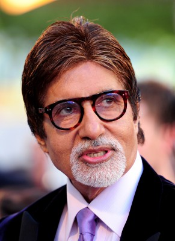 Amitabh Bachchan als Meyer Wolfsheim
- 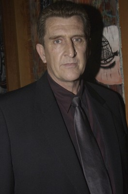 Richard Carter als Herzog
 Jason Clarke als George Wilson
Jason Clarke als George Wilson- 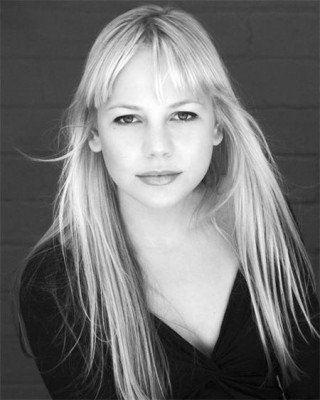 Adelaide Clemens als Catherine
- 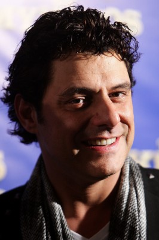 Vince Colosimo als Michaelis
- 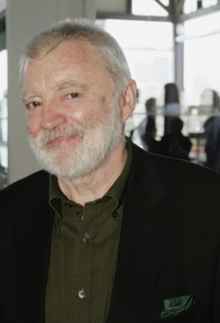 Max Cullen als Owl Eyes
 Elizabeth Debicki als Jordan Baker
Elizabeth Debicki als Jordan Baker Leonardo DiCaprio als Jay Gatsby
Leonardo DiCaprio als Jay Gatsby Joel Edgerton als Tom Buchanan
Joel Edgerton als Tom Buchanan- 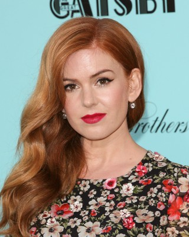 Isla Fisher als Myrtle Wilson
- Garrett William Fountain als Barman
- Iota als Trimalchio the Orchestra Leader
- 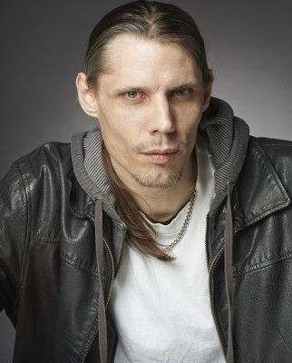 Goran D. Kleut als Head Waiter - Speakeasy
 Tobey Maguire als Nick Carraway
Tobey Maguire als Nick Carraway- 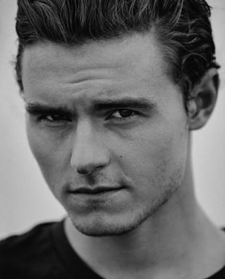 Callan McAuliffe als Teen Jay Gatsby
- Hamish Michael als Clerk - Probity Trust
- Olga Miller als Russian Silent Film Actress
 Carey Mulligan als Daisy Buchanan
Carey Mulligan als Daisy Buchanan- Gus Murray als Teddy Barton
- Kate Mulvany als Mrs. McKee
- 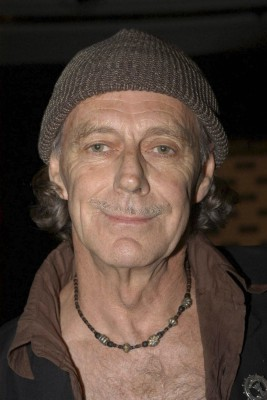 Barry Otto als Benny McClenahan
- Tasman Palazzi als Young James Gatz
- Brenton Prince als Guard at Gatsby's Gates
- Milan Pulvermacher als Waiter - Hotel Sayre
- Kasia Stelmach als Silent Film Star Marlene Moon
- 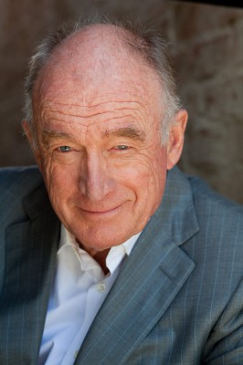 Nick Tate als Taxi Driver
 Jack Thompson als Dr. Walter Perkins
Jack Thompson als Dr. Walter Perkins- Sylvana Vandertouw als European Woman
- Gemma Ward als Languid Girl
- 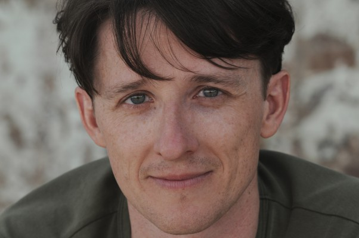 Matthew Whittet als Vladimir Tostoff
- 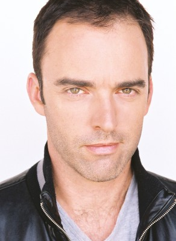 Felix Williamson als Henri
- 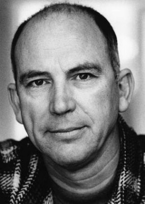 Bill Young als Policeman - Wilson's Garage
- Karinna Greksa als The Twins
- Briden Starr als Party Dancer
- Lyndell Harradine als Party Dancer
- Lara Mulcahy als Party Dancer
- Sarah Bishop als Party Guest , uncredited
- Ryan Cooper als Extra , uncredited
- Conor Fogarty als Gatsby's Butler , uncredited
- Lara Goldie als Cheery Broadway Reveler , uncredited
- Matt James als Thug , uncredited
- Georgia Jarrett als Party Attendee , uncredited
 Jacek Koman als (uncredited
Jacek Koman als (uncredited- Baz Luhrmann als Waiter , uncredited
- 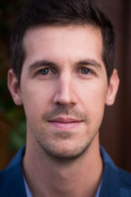 Kai Pantano als Guard , uncredited
- Jaimee Peasley als Party Entertainer , uncredited
- Chris Proctor als William , uncredited
- Alexander Roberts als Gatsby Servant , uncredited
- Lisa Adam als Weeping / Singing Woman
- Frank Aldridge als Well Dressed Male Witness - Wilson's Garage
Datei: X:\2013(G-H)\Große Gatsby, Der (2013, FSK12, 1920x800).mkv seit 02.02.2015
Festplatte: HD 2012(N-Z)-2013(A-H)
 Es gibt insgesamt 43 Filme in der Gruppe '2013(G-H)'
Es gibt insgesamt 43 Filme in der Gruppe '2013(G-H)'